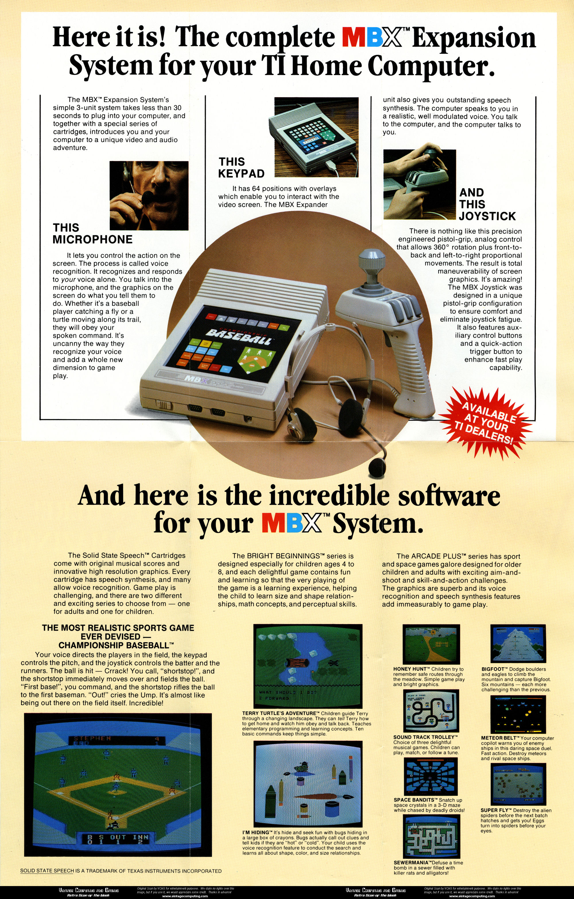
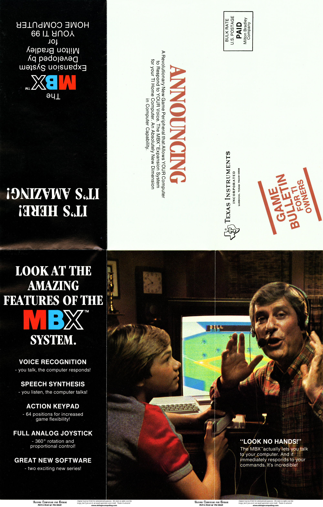

MBX Expansion System
Consumer voice-recognition gaming peripheral that trained on your voice, then let you shout commands at the screen.

Overview
The MBX Expansion System was a gaming peripheral for the TI-99/4A home computer, released by Milton Bradley in late 1983 and discontinued within months due to the 1984 video game crash. It combined three distinct interaction modalities into one package: a voice-recognition headset that trained on the user's voice to understand spoken game commands; a 360-degree analog joystick with proportional control and a twist knob for object rotation; and a 64-key membrane action keypad with swappable game overlays. The system also included a built-in speech synthesizer superior to Texas Instruments' own. On startup, users trained the voice system by speaking displayed words; thereafter, spoken English commands like 'Fire!', 'Climb!', or 'Dive!' controlled the game. The MBX was originally designed as a standalone Milton Bradley game console to compete with the Atari 2600, but was repurposed as a TI-99/4A peripheral after MB's president killed the console project. Only about 10 game cartridges were ever produced, and fewer than a dozen titles supported its unique features.
Deep dive
The MBX began life in 1982 as Milton Bradley's answer to the Atari 2600 and Mattel Intellivision — a standalone game console built around voice recognition. MB planned to differentiate with voice input, speech synthesis, and a unique controller. The project was led by Mike Langieri. When ColecoVision entered the market, MB president Jim Shea decided the market could not support four consoles and killed the project. Langieri was then tasked with finding a use for the developed technology. The system was retooled as an add-on for the TI-99/4A, a computer for which MB had already developed games and whose graphics chip (TMS9918) MB had some connection to. The MBX was demoed at the January 1983 CES to lines of waiting attendees. Atari was so impressed they entered an agreement for MB to produce an equivalent system called the Voice Commander for the Atari 2600 and 5200, though this deal eventually fell apart.
The MBX offered three simultaneous interaction modes. Voice: A headset with adjustable boom microphone fed speech into a recognition system. Before each game, the user trained the system by speaking displayed words; the system created a voice model and then recognized spoken commands during play. Different games used different vocabulary. The joystick: A pistol-grip controller with 360-degree analog directional control (not limited to 8 positions), proportional speed (faster stick movement = faster on-screen action), a twist knob on top for continuous object rotation, and four buttons (three on the back plus a trigger under the lever). The keypad: A 64-button membrane surface with swappable plastic overlays specific to each game, providing labeled one-touch commands. None of the cartridges used ALL the MBX facilities, and the joystick was never fully utilized by software.
The MBX unit was effectively a second computer that used the TI-99/4A for game storage and video display. It contained a 6809 CPU running at 6 MHz and a General Instrument SP1000 (GI8335) speech synthesis chip. It connected to the TI-99/4A via the joystick port and cassette port, using a custom serial protocol. It had its own 9V DC power supply. The headset featured padded ear rests (not headphones — they were purely for comfort) and a boom microphone that could be positioned 1–2 inches from the mouth. The joystick used analog sensing for position and speed. The system was manufactured from approximately September to November 1983 (control numbers MB8309–MB8311).
The MBX's joystick design lived on: a simplified version (without the twist knob or analog control) became the Atari Space Age Joystick and was also marketed by MB as the HD2000 Joystick. The voice-training paradigm — speak displayed words to calibrate the system — presaged modern voice assistant setup routines by decades. Barry Boone later produced assembly code allowing Extended Basic programmers to access the MBX's facilities. About 10 cartridge titles were released, including Championship Baseball (the flagship), Space Bandits, Bigfoot, Sewermania, and Terry Turtle's Adventure. The system remains a cult object among TI-99/4A collectors and an extraordinary what-if in gaming history: a voice-controlled game console killed by market timing.
Team & pioneers
- Mike Langieri. Lead designer, creator of the MBX concept, designer of the MBX joystick and several game titles
- Dave Winzler. Co-developer, worked with Langieri on Championship Baseball
- Tim Scully. Programmer of Honey Hunt
- Milton Bradley Company. Toy/game manufacturer, developed the system at their electronics division
- Barry Boone. TI-99/4A community developer who created Extended Basic CALL LINKs for the MBX
Media

Sources
- TI-99/4A Videogame House: MBX History (extensive history from creator Mike Langieri)
- Ninerpedia: MBX technical details and cartridge list
- Vintage Computing and Gaming: Retro Scan of MBX flyer by Benj Edwards
- Rob Patton's MBX Page (screenshots, reviews, cartridge images)
- AtariHQ: Milton Bradley's Voice Commander and Atari lawsuit